気になった自販機まとめ
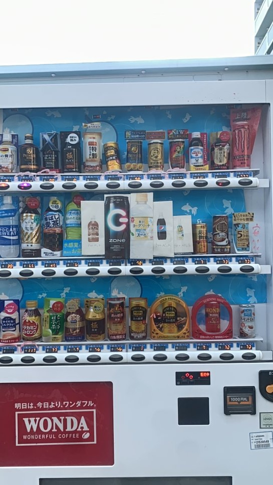
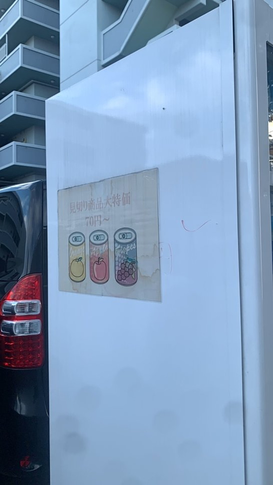
2020年の夏に甲府で見つけた自販機。
70円で500mlのZONEとペプシが買えるの！？と小躍りしながら小銭を入れた記憶
ちなみに次の年行ったら商品が変わってた。ランダム性高い。
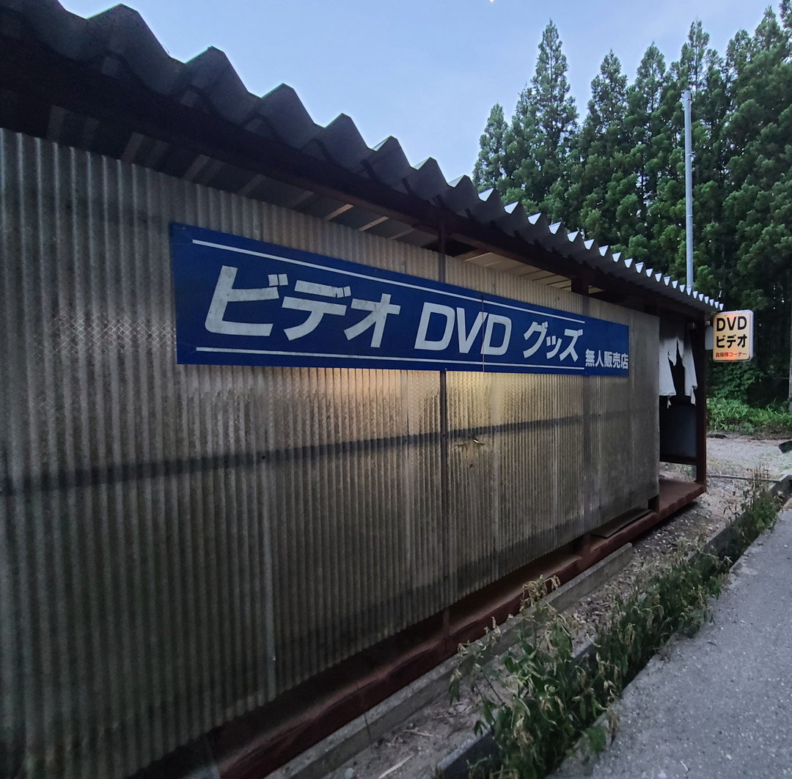
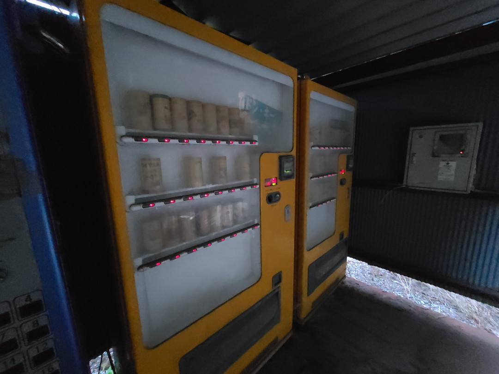
2022年6月石川県七尾市あたりで発見したエロ本自販機。
すっかり淘汰されたと思っていたので見つけたときは感激した。
2枚目の酒用自販機はもう廃れていたがメインの18禁本は健在だった。
一応写真は撮ったがなんかコンプラ的にめんどくさそうなので載せないでおく。
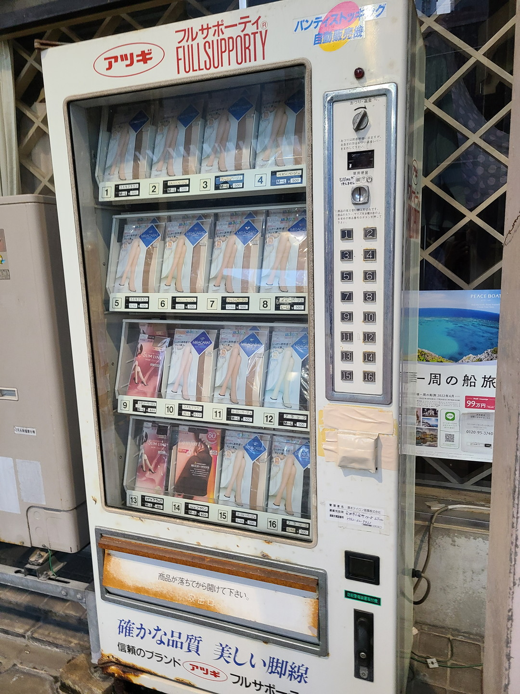
2022年石川県小松駅近くのアーケード街内部にあったストッキング自販機。
なぜこんな大量にストッキングばかりを並べているのか.
そんなに需要があるのか…考えたが理解不能だった。
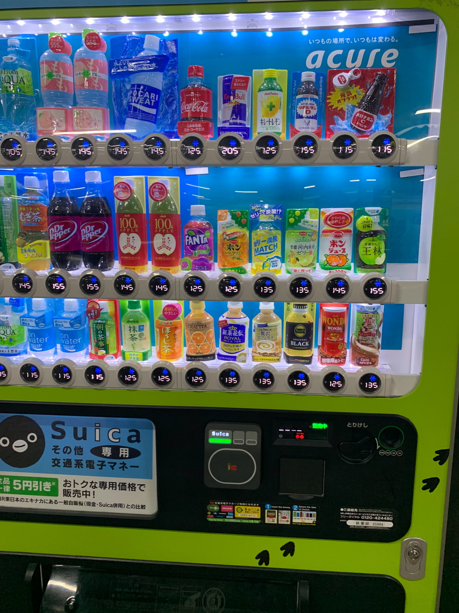
2019年5月頃たしか秋葉原駅構内で見かけた一円単位で料金が設定されている自販機。
確かにIC専用にすれば端数出ても問題ないか。
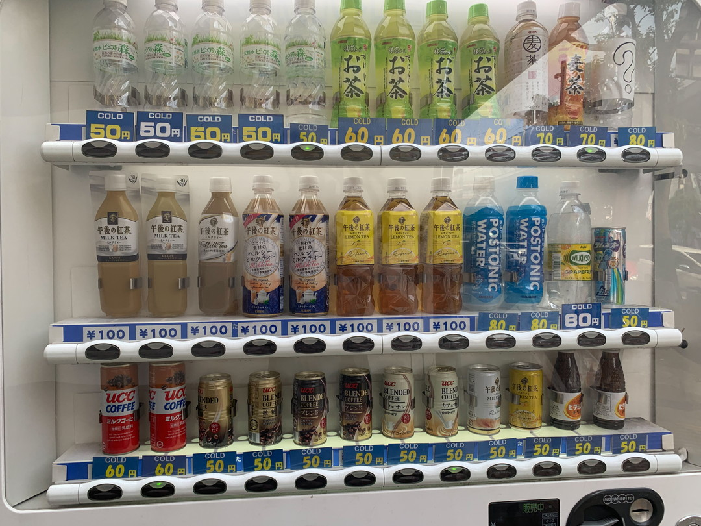
2019年5月に大阪で撮った自販機。
大阪名物安い缶ジュースを初めてみて感動した。
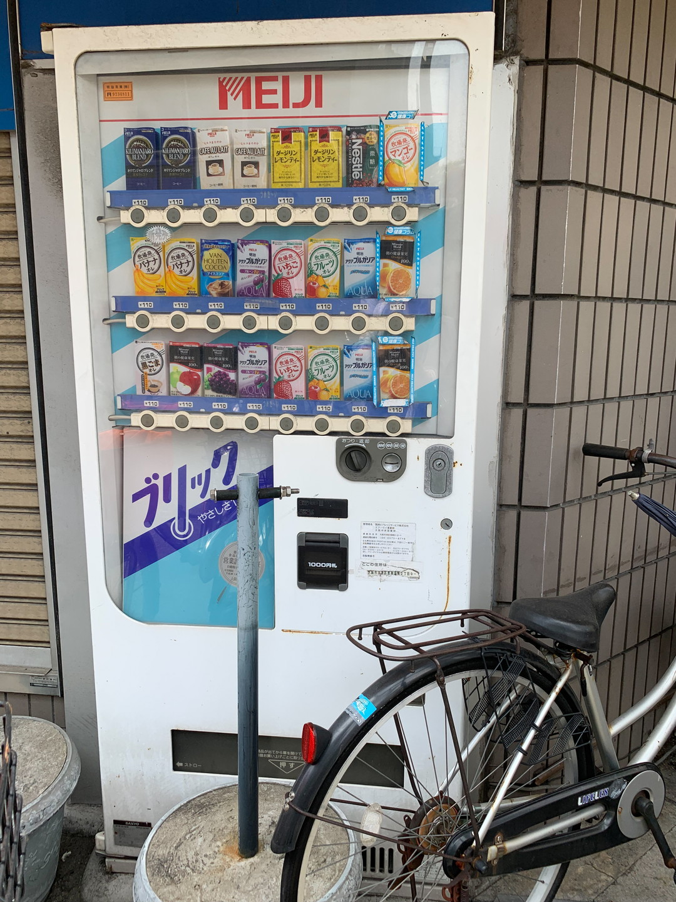
同じく2019年5月に大阪で撮った自販機。
街角の自販機で紙パックは珍しいなと思って撮ったはず。
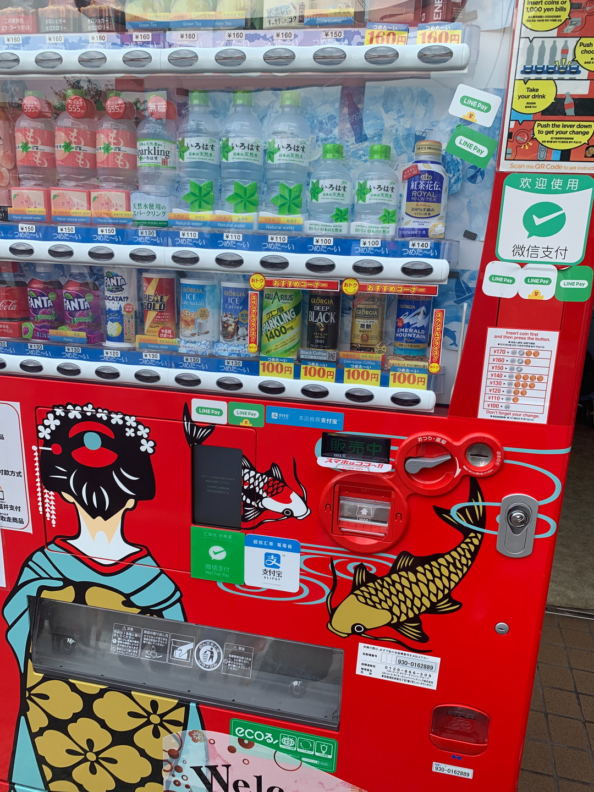
2019年7月に京都の伏見稲荷神社で撮った自販機。
この頃五輪前なので一気に自販機が観光仕様に変わっていた
そういえば公衆トイレ用のティッシュの自販機もあったが撮り忘れていた。(腹が痛かったのでそれどころではなかったけど)
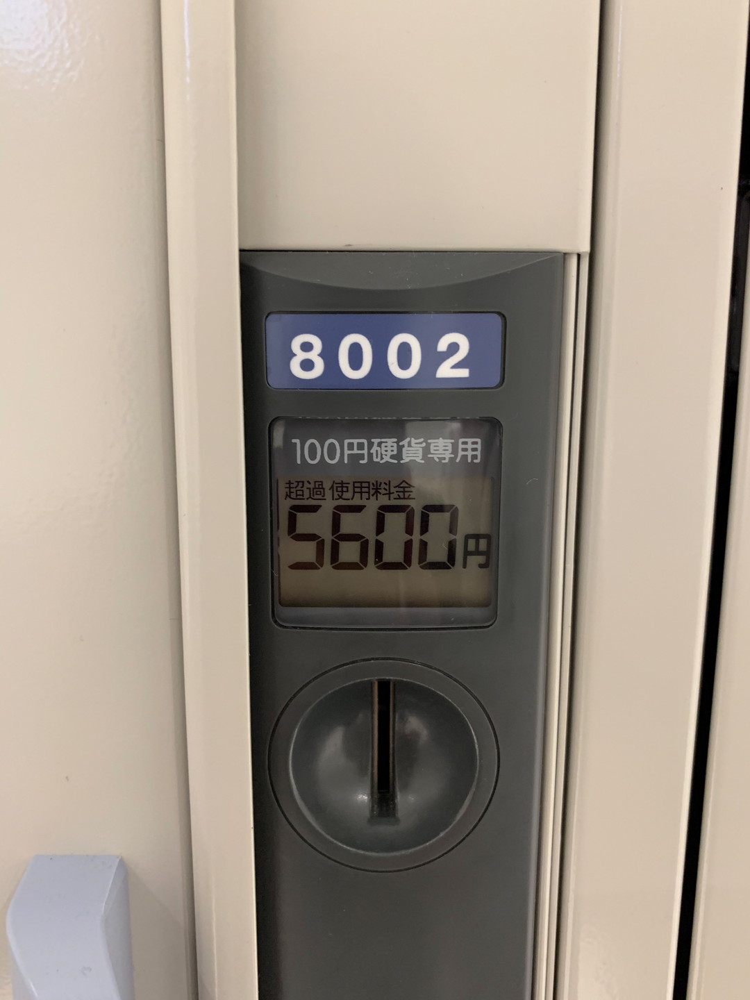
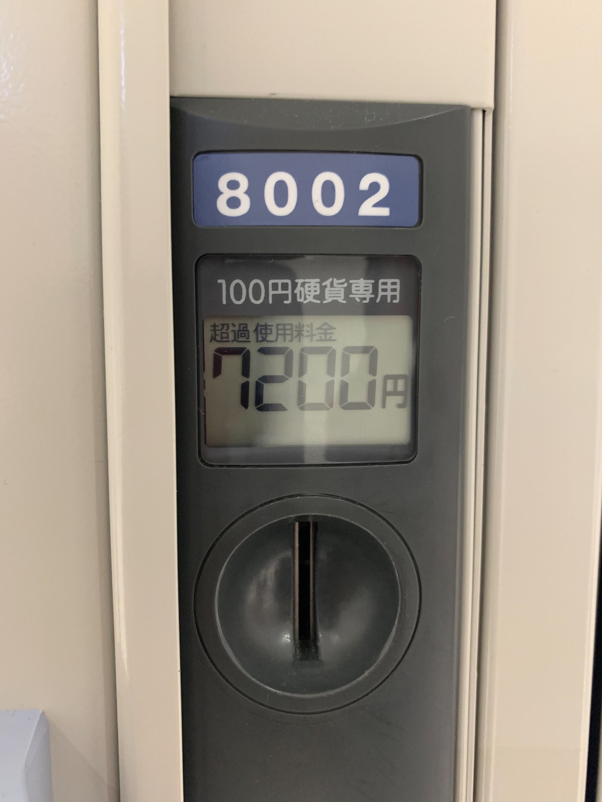
2019年8月関空の貸しロッカー
1枚目を撮影した日から3日位したら2枚目の状態になってた。
全部小銭で入れないといけないから大変そうだ…。
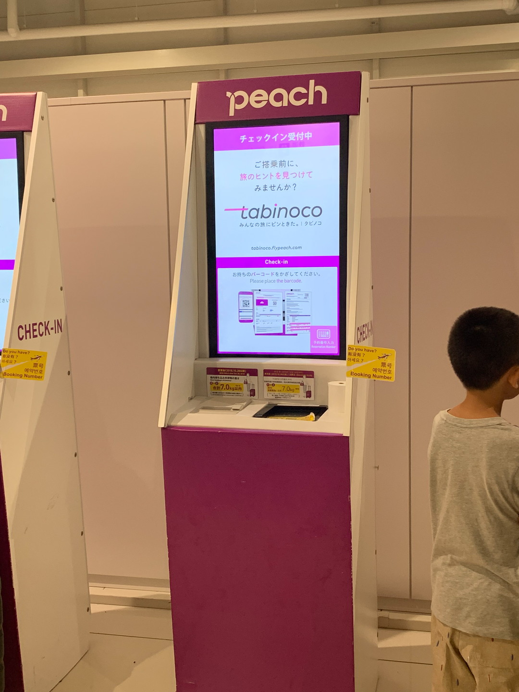
同じく2019年8月の関空の自動チェックインカウンター
今まで乗ったことある飛行機全部有人カウンターだったから新鮮だった。
割と最近増えているらしい？
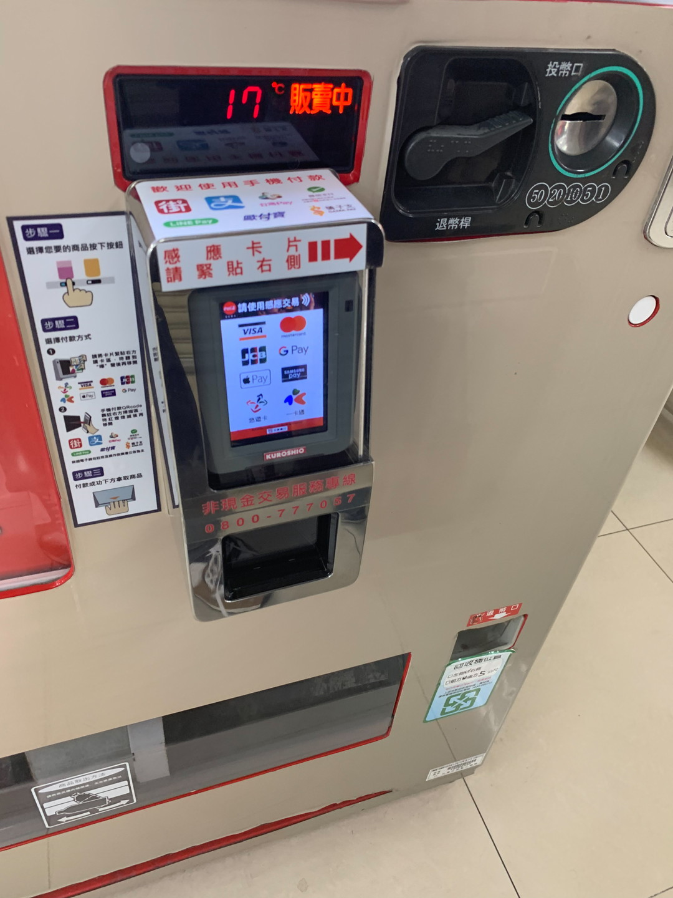
2019年8月台湾の電気街あたりで撮った自販機。
Mastercardのロゴが入った自販機って日本にあったっけ？
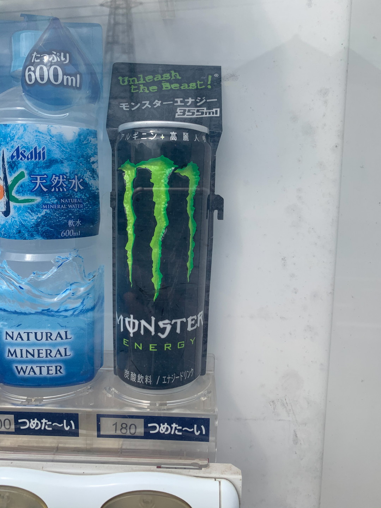
見つけると嬉しい180円モンスターエナジー
噂によると170円以下もあるらしいがまだ見たことがない。